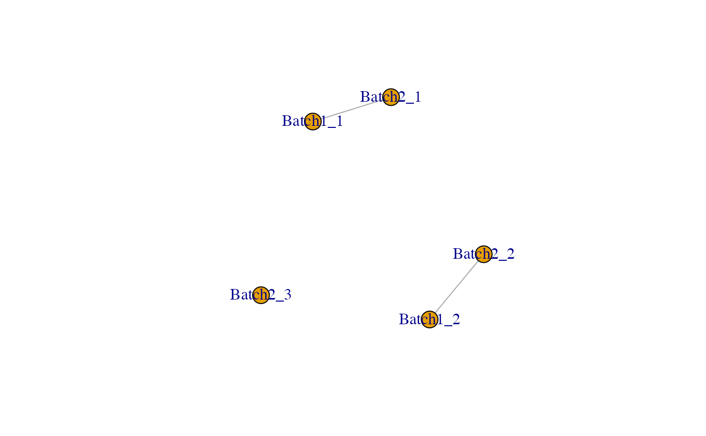
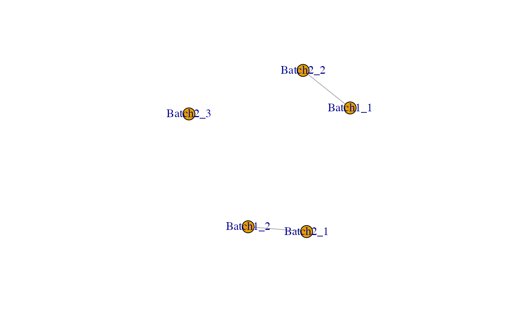
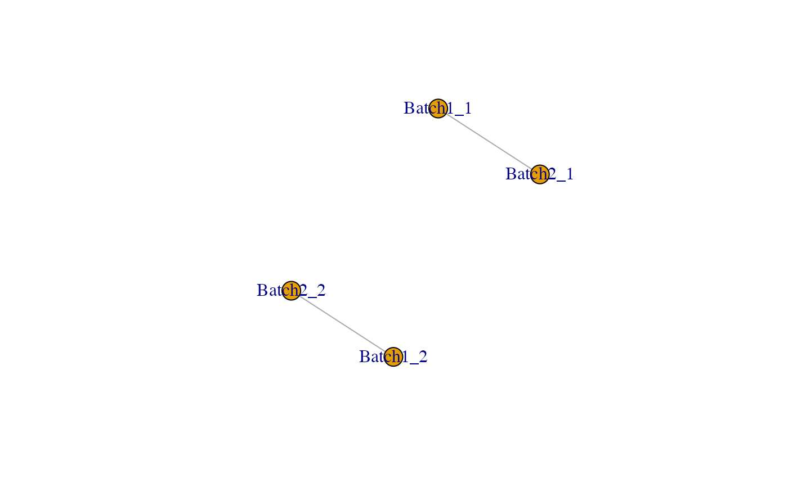
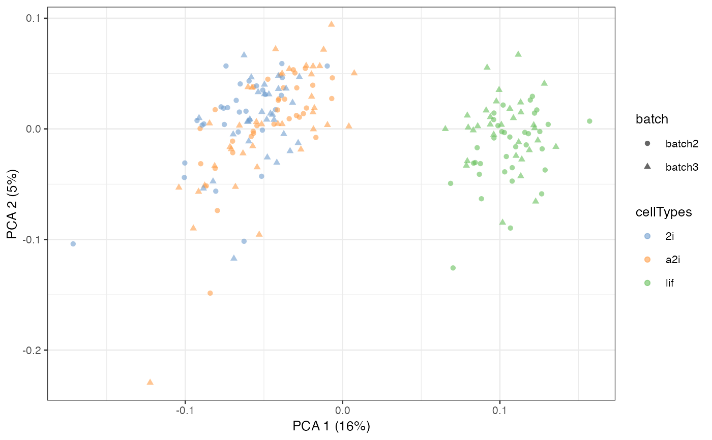

Merge single-cell data hierarchically from different batches and experiments leveraging (pseudo)-replicates, control genes and pseudo-bulk.
scMerge2h(
exprsMat,
batch_list = list(),
h_idx_list = list(),
cellTypes = NULL,
condition = NULL,
ctl = rownames(exprsMat),
chosen.hvg = NULL,
ruvK_list = 20,
use_bpparam = BiocParallel::SerialParam(),
use_bsparam = BiocSingular::RandomParam(),
use_bnparam = BiocNeighbors::AnnoyParam(),
pseudoBulk_fn = "create_pseudoBulk",
k_pseudoBulk = 30,
k_celltype = 10,
exprsMat_counts = NULL,
cosineNorm = TRUE,
return_subset = FALSE,
return_subset_genes = NULL,
return_matrix = TRUE,
verbose = TRUE,
seed = 1
)A gene (row) by cell (column) log-transformed matrix to be adjusted.
A list indicating the batch information for each cell in the batch-combined matrix.
A list indicating the indeces information in the hierarchical merging.
An optional vector indicating the cell type information for each cell in the batch-combined matrix.
If it is NULL, pseudo-replicate procedure will be run to identify cell type.
An optional vector indicating the condition information for each cell in the batch-combined matrix.
A character vector of negative control. It should have a non-empty intersection with the rows of exprsMat
An optional character vector of highly variable genes chosen.
An integer indicates the number of unwanted variation factors that are removed, default is 20.
A BiocParallelParam class object from the BiocParallel package is used. Default is SerialParam().
A BiocSingularParam class object from the BiocSingular package is used. Default is RandomParam().
A BiocNeighborsParam class object from the BiocNeighbors package is used. Default is AnnoyParam().
A character indicates the way of pseudobulk constructed.
An integer indicates the number of pseudobulk constructed within each cell grouping. Default is 30.
An integer indicates the number of nearest neighbours used in buildSNNGraph when grouping cells within each batch. Default is 10.
A gene (row) by cell (column) counts matrix to be adjusted.
A logical vector indicates whether cosine normalisation is performed on input data.
If TRUE, adjusted matrix of only a subset of genes (hvg or indicates in return_subset_genes) will be return.
An optional character vector of indicates the subset of genes will be adjusted.
A logical vector indicates whether the adjusted matrix is calculated and returned.
If FALSE, then only the estimated parameters will be returned.
If TRUE, then all intermediate steps will be shown. Default to FALSE.
A numeric input indicates the seed used.
## Loading example data
data('example_sce', package = 'scMerge')
## Previously computed stably expressed genes
data('segList_ensemblGeneID', package = 'scMerge')
# Create a fake sample information
example_sce$sample <- rep(c(1:4), each = 50)
# Construct a hierarchical index list
h_idx_list <- list(level1 = split(1:200, example_sce$batch),
level2 = list(1:200))
# Construct a batch information list
batch_list <- list(level1 = split(example_sce$sample, example_sce$batch),
level2 = list(example_sce$batch))
library(SingleCellExperiment)
exprsMat <- scMerge2h(exprsMat = logcounts(example_sce),
batch_list = batch_list,
h_idx_list = h_idx_list,
ctl = segList_ensemblGeneID$mouse$mouse_scSEG,
ruvK_list = c(2, 5))
#> [1] "Hierarchical merging level 1, data1"
#> [1] "Cluster within batch"
#> Warning: more singular values/vectors requested than available
#> Warning: You're computing too large a percentage of total singular values, use a standard svd instead.
#> Warning: requested number of components greater than available rank
#> Warning: more singular values/vectors requested than available
#> Warning: You're computing too large a percentage of total singular values, use a standard svd instead.
#> Warning: requested number of components greater than available rank
#> [1] "Normalising data"
#> [1] "Constructing pseudo-bulk"
#> Dimension of pseudo-bulk expression: [1] 1047 89
#> [1] "Identifying MNC using pseudo-bulk:"
#> [1] "Running RUV"
#> [1] 100 1047
#> [1] "Hierarchical merging level 1, data2"
#> [1] "Cluster within batch"
#> Warning: more singular values/vectors requested than available
#> Warning: You're computing too large a percentage of total singular values, use a standard svd instead.
#> Warning: requested number of components greater than available rank
#> Warning: more singular values/vectors requested than available
#> Warning: You're computing too large a percentage of total singular values, use a standard svd instead.
#> Warning: requested number of components greater than available rank

#> [1] "Normalising data"
#> [1] "Constructing pseudo-bulk"
#> Dimension of pseudo-bulk expression: [1] 1047 86
#> [1] "Identifying MNC using pseudo-bulk:"

#> [1] "Running RUV"
#> [1] 100 1047
#> [1] "Hierarchical merging level 2, data1"
#> [1] "Cluster within batch"
#> [1] "Normalising data"
#> [1] "Constructing pseudo-bulk"
#> Dimension of pseudo-bulk expression: [1] 1047 100
#> [1] "Identifying MNC using pseudo-bulk:"

#> [1] "Running RUV"
#> [1] 200 1047
assay(example_sce, "scMerge2") <- exprsMat[[length(h_idx_list)]]
example_sce = scater::runPCA(example_sce, exprs_values = 'scMerge2')
scater::plotPCA(example_sce, colour_by = 'cellTypes', shape = 'batch')
